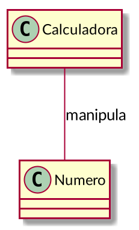
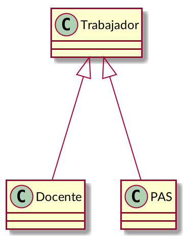
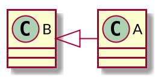
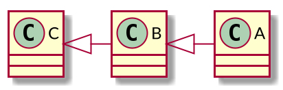
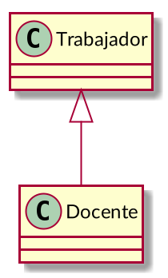
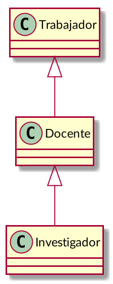
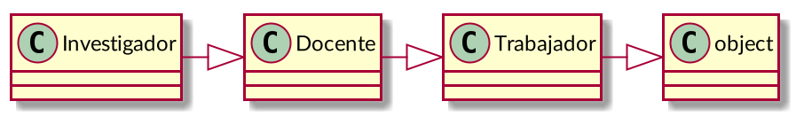

Relaciones entre clases
Ricardo Pérez López
IES Doñana, curso 2024/2025
1 Relaciones básicas
1.1 Introducción
Los objetos de un programa interactúan entre sí durante la ejecución del mismo, por lo que decimos que los objetos se relacionan entre sí.
Las relaciones entre objetos pueden ser de varios tipos.
Por ejemplo, cuando un objeto envía un mensaje a otro, tenemos un ejemplo de relación del tipo usa (el primer objeto «usa» al segundo).
Otras veces, los objetos contienen a otros objetos, o bien forman parte de otros objetos.
Finalmente, a veces las relaciones entre los objetos son meramente conceptuales:
- Son relaciones que no se reflejan directamente en el código fuente del programa, sino que aparecen durante el análisis del problema a resolver o como parte del diseño de la solución, en las etapas de análisis y diseño del sistema.
A la relación específica que se da entre dos objetos concretos se denomina enlace.
Cuando una o varias instancias de una clase está relacionada con una o varias instancias de otra clase, también podemos decir que ambas clases están relacionadas.
Una relación entre clases representa un conjunto de posibles relaciones entre instancias de esas clases (un conjunto de enlaces).
Las relaciones entre clases se pueden representar gráficamente en los llamados diagramas de clases.
Esos diagramas se construyen usando un lenguaje de modelado visual llamado UML, que se estudia con detalle en el módulo Entornos de desarrollo.
Entre otras cosas, el lenguaje UML describe los distintos tipos de relaciones entre clases que se pueden dar en un sistema orientado a objetos y cómo se representan y se identifican gráficamente.

La multiplicidad de una clase en una relación representa la cantidad de instancias de esa clase que se pueden relacionar con una instancia de la otra clase en esa relación.
El lenguaje UML también describe la sintaxis y la semántica de las posibles multiplicidades que se pueden dar en una relación entre clases.
Esas multiplicidades también aparecen en los diagramas de clases.
Ejemplos de sintaxis:
n: exactamente n instancias (siendo n un número entero).
*: cualquier número de instancias.
n..m: de n a m instancias.
n..*: de n instancias en adelante.
En el módulo de Programación sólo trabajaremos con las relaciones que se reflejen en el código fuente del programa y que, por tanto, formen parte del mismo.
Por tanto, las relaciones conceptuales que se puedan establecer a nivel semántico durante el análisis o el diseño del sistema no se verán aquí y sólo se trabajarán en Entornos de desarrollo.
En ese módulo también se estudia que los diagramas de clases son una forma de modelar la estructura y el funcionamiento de un sistema.
Está relacionado también con el modelo de datos que se construye en el módulo de Bases de datos.
Todos estos artefactos (código fuente, diagrama de clases y modelo de datos) representan puntos de vista distintos pero complementarios del mismo sistema.
1.2 Asociación
Una asociación simple es una relación genérica que se establece entre dos clases.
Se utiliza cuando se quiere representar el hecho de que las dos clases están relacionadas de alguna manera distinta a la de otros tipos de relaciones más específicas (dependencia, agregación, composición, generalización, etc.).
Tiene más interés en el módulo de Entornos de desarrollo, ya que se usa principalmente durante el análisis y diseño preliminar del sistema.
En Programación tiene menos utilidad y casi siempre se puede sustituir por otro tipo de relación más específica.
Las asociaciones suelen llevar nombre, ya que representan una relación conceptual y hay que aclarar cuál es (normalmente es un nombre asociado al dominio del problema).
En ese sentido, se parecen mucho a las relaciones del modelo Entidad-Relación que se estudia en Bases de datos.
Por ejemplo, si estamos construyendo una aplicación que simule una calculadora, podríamos tener las clases
CalculadorayNumero.En ese caso, podríamos decir que se establece una asociación entre las clases
CalculadorayNumero: la calculadora manipula números.Dicha asociación se puede representar así en un diagrama de clases, usando el lenguaje UML:

La asociación se llama manipula y representa una relación que se da conceptualmente en el modelo que estamos haciendo de nuestra aplicación.
No hay más pistas sobre qué quiere decir manipular números.
Puede ser útil durante el análisis pero no nos ayuda mucho en Programación.
1.3 Dependencia
Una dependencia es un tipo de relación que representa el hecho de que una clase depende de otra por algún motivo.
Ese motivo se indica en la misma dependencia usando un estereotipo.
Un estereotipo es una etiqueta entre comillas («») que acompaña a la relación y que indica de qué tipo es, o bien aporta más información.
En Programación se puede usar, entre otras cosas, para representar el hecho de que una clase «usa» a la otra de alguna forma.
Por ejemplo, cuando un método de una clase necesita acceder a una instancia de otra clase.
En ese caso, esa instancia la puede recibir como argumento, o bien puede crearla y destruirla el propio método.
También cuando una clase llama a un método de la otra clase.
Siguiendo con el ejemplo anterior de la calculadora, si partimos del siguiente código:
Aquí ya tenemos claro que se establece una dependencia entre las clases
CalculadorayNumero: la claseCalculadora«usa» a la claseNumero.
Esa dependencia se representa gráficamente así:

En lugar del estereotipo «usa», también podríamos haber usado el estereotipo «llama», que representa el hecho de que la clase origen llama a algún método de la clase destino.

1.4 Agregación
La agregación es una relación que se establece entre una clase (la agregadora) y otra clase (la agregada).
Representa la relación «tiene»: la agregadora tiene a la agregada.
Podríamos decir que la clase agregada forma parte de la agregadora, pero de una forma débil, ya que los objetos de la clase agregadora y de la clase agregada tienen su existencia propia, independiente unos de otros.
Por tanto, un objeto agregado puede estar en varios objetos agregadores al mismo tiempo.
Para ello, los objetos de la clase agregadora almacenan referencias a los objetos agregados pero esas no tienen por qué ser las únicas referencias a esos objetos que existen en el programa.
Por tanto:
La clase agregada puede formar parte de varias clases agregadoras.
Según sea el caso, un objeto de la clase agregada puede existir aunque no forme parte de ningún objeto de la clase agregadora.
La clase agregadora no tiene por qué ser la responsable de crear el objeto agregado, sino que ese objeto ya puede haber sido creado en otra parte del programa.
La clase agregadora no es la responsable de que del objeto agregado permanezca existiendo mientras forme parte de la agregadora.
Cuando se destruye un objeto de la clase agregadora, no está obligado a destruir los objetos de la clase agregada.
Ejemplo
Los grupos tienen alumnos. Un alumno puede pertenecer a varios grupos, y un alumno existe por sí mismo aunque no pertenezca a ningún grupo.
La clase
Grupo«agrega» a la claseAlumnoy contiene referencias a los alumnos del grupo.

class Grupo:
def __init__(self):
self.__alumnos = [] # Guarda una lista de referencias a Alumnos
def get_alumnos(self):
return self.__alumnos
def meter_alumno(self, alumno):
self.__alumnos.append(alumno)
def sacar_alumno(self, alumno):
try:
self.__alumnos.remove(alumno)
except ValueError:
raise ValueError("El alumno no está en el grupo")
daw1 = Grupo() # Los objetos los crea...
pepe = Alumno() # ... el programa principal, así que ...
juan = Alumno() # ... ningún objeto crea a otro.
daw1.meter_alumno(pepe) # Metemos en __alumnos una referencia a pepe
# (ahora hay dos referencias al mismo alumno)
daw1.meter_alumno(juan) # Metemos en __alumnos una referencia a juan
# (ahora hay dos referencias al mismo alumno)
daw1.sacar_alumno(pepe) # Eliminamos de __alumnos la referencia a pepe
daw2 = Grupo() # Se crea otro grupo
daw2.meter_alumno(juan) # juan está en daw1 y daw2 al mismo tiempo
# (ahora hay tres referencias al mismo alumno)1.5 Composición
La composición es una relación que se establece entre una clase (la clase compuesta) y otra clase (la clase componente).
Representa la relación «está compuesto por»: la compuesta está compuesta por sus componentes.
También se puede decir que la clase componente forma parte de la clase compuesta, pero de una forma fuerte, ya que los objetos componentes sólo pueden existir como parte de un objeto compuesto.
Para ello, los objetos de la clase compuesta almacenan referencias de los objetos componentes, pero de manera que esas referencias no se pueden compartir entre varios objetos compuestos y son las únicas referencias que existen de esos objetos componentes.
Por tanto:
Un objeto componente sólo puede formar parte de un único objeto compuesto.
Un objeto componente sólo debe existir como parte de un objeto compuesto (no debe tener existencia propia fuera del objeto compuesto).
La clase compuesta puede crear sus objetos componentes (y normalmente ocurre así) pero no es estrictamente necesario.
La clase compuesta es responsable de almacenar las únicas referencias que deben existir de todos sus objetos componentes.
Cuando se destruye un objeto compuesto, se deben destruir todos sus objetos componentes.
Ejemplo
En Twitter, una cuenta tiene una serie de tuits. Cada tuit debe pertenecer a una cuenta, pero no pueden pertenecer a más de una cuenta al mismo tiempo. Cuando se elimina una cuenta, se eliminan todos sus tuits.
Junto al rombo relleno siempre habrá una multiplicidad de “1”, ya que un componente sólo puede formar parte de un objeto compuesto.

- La clase
Tuitpodría ser tan sencilla como:
- Primera opción, donde la clase
Cuentase encarga de crear el tuit:
class Cuenta:
def __init__(self):
self.__tuits = [] # Guarda una lista de referencias a Tuits
def get_tuits(self):
return self.__tuits[:] # Devuelve una copia
def crear_tuit(self, texto):
t = Tuit(texto) # El tuit se crea dentro de la cuenta
self.__tuits.append(t) # La cuenta almacena el tuit
return t.get_ident() # Devuelve el id del tuit
def eliminar_tuit(self, ident):
for t in self.__tuits:
if t.get_ident() == ident:
self.__tuits.remove(t)
return
raise ValueError("No existe ningún tuit con ese id")
c1 = Cuenta()
id1 = c1.crear_tuit("Este módulo es muy bonito")
id2 = c1.crear_tuit("Me encanta DAW")
c2 = Cuenta()
id3 = c2.crear_tuit("Odio Programación")- Segunda opción, donde el tuit se crea fuera de la clase
Cuentay luego se envía a ésta:
class Cuenta:
def __init__(self):
self.__tuits = [] # Guarda una lista de referencias a Tuits
def get_tuits(self):
return self.__tuits[:] # Devuelve una copia
def guardar_tuit(self, tuit):
self.__tuits.append(tuit) # La cuenta almacena el tuit
return tuit.get_ident()
def eliminar_tuit(self, ident):
for t in self.__tuits:
if t.get_ident() == ident:
self.__tuits.remove(t)
return
raise ValueError("No existe ningún tuit con ese id")
# Los tuits se crean fuera de la clase Cuenta, pero justo a continuación
# se envían a la cuenta. Así, el objeto cuenta es el único que almacena
# una referencia al tuit (es la única referencia que existe de ese tuit):
c1 = Cuenta()
id1 = c1.guardar_tuit(Tuit("Este módulo es muy bonito"))
id2 = c1.guardar_tuit(Tuit("Me encanta DAW"))
c2 = Cuenta()
id3 = c2.guardar_tuit(Tuit("Odio Programación"))1.5.0.1 Resumen
| Agregación | Composición | |
|---|---|---|
| Al todo se le llama: | Agregador(a) | Compuesto/a |
| A la parte se le llama: | Agregado/a | Componente |
| Una parte puede pertenecer a: | Varios todos | Un único todo |
| Una parte puede existir aunque no pertenezca a un todo: | Sí | No |
| El todo es responsable de crear la parte: | No | Normalmente sí, pero no es necesario |
| El todo es responsable de almacenar la parte: | No | Sí |
| Cuando se destruye el todo, se debe destruir la parte: | No | Sí |
| Multiplicidad en el todo: | Cualquiera | 1 |
2 Herencia
2.1 Generalización
La relación de generalización es un tipo de relación que se da entre una clase (la superclase o clase base) y otra clase (la subclase o clase derivada).
Representa la relación «es un(a)»: una instancia de la subclase también es una instancia de la superclase.
También se puede decir que:
La subclase es una forma más especializada de la superclase.
La superclase es una forma más general de la subclase.
La práctica totalidad de los lenguajes orientados a objetos permiten definir subclases a partir de otras clases, creando lo que se denominan jerarquías de generalización.
Por ejemplo:
- En un Instituto hay dos tipos de trabajadores: docentes y PAS (personal de administración y servicios).
Ambos comparten características comunes pero también tienen otras que los diferencian.
Todo docente «es un» trabajador, y todo PAS también «es un» trabajador.
Pero no podemos decir que todo trabajador es un docente, ya que podría ser un PAS.
Por tanto, podemos decir que tanto
DocentecomoPASson subclases deTrabajador.

Se puede usar la generalización para:
Cambiar o ampliar las características de una clase creando a partir de ella otra más especializada (una subclase de la original).
Combinar las características de varias clases en una clase más general que agrupe los elementos comunes a todas ellas (una superclase de las originales).
Servir de base a otros mecanismos interesantes como el polimorfismo.
Las relaciones de generalización son transitivas:
Si una clase
Aes subclase de otra claseB, y ambas están directamente relacionadas en la relación de generalización (es decir, que no hay ninguna otra clase intermedia entreAyBen la relación), decimos queAes subclase directa deBo queBes una superclase directa deA.
Si una clase
Aes subclase directa de una claseByBes subclase directa de otra claseC, peroAno es subclase directa deC, decimos queAes subclase indirecta deC(a través deB).
Cuando decimos simplemente que
Aes subclase deB, puede que sea subclase directa o indirecta.
2.2 Herencia
A través de la relación de generalización, las subclases adquieren (heredan) las características de la superclase.
A ese mecanismo se le denomina herencia.
Son dos conceptos distintos pero interconectados:
La generalización es la relación que se establece entre dos clases, con la cual se representa el hecho de que una clase es subclase de la otra (su superclase).
La herencia es el mecanismo por el que una subclase adquiere características de la superclase.
La herencia puede considerarse como un mecanismo de reutilización de código entre la superclase y la subclase, evitando repeticiones innecesarias.
2.3 Modos
Existen dos modos de generalización, en función de la cantidad de superclases directas que se le permite tener a una subclase dada:
Generalización simple: también llamada herencia simple, es cuando una subclase sólo puede tener una superclase directa.
Generalización múltiple: también llamada herencia múltiple, es cuando una subclase puede tener varias superclases directas.
Hay lenguajes que sólo admiten herencia simple y lenguajes que admiten herencia múltiple.
En concreto:
Python soporta la herencia múltiple.
Java sólo soporta la herencia simple.
2.3.1 Herencia simple
En la herencia simple, una clase sólo puede tener una única superclase directa.
Por ejemplo, el caso de un docente que también es un trabajador, de forma que la clase
Docentesólo es subclase directa deTrabajador(y no tiene más superclases directas).

Una clase siempre puede ser superclase directa de muchas clases, pero en la herencia simple sólo puede ser subclase directa de una única superclase directa.
El siguiente caso también sería herencia simple, ya que tenemos dos relaciones de generalización separadas, pero ninguna subclase tiene más de una superclase directa:

- Por tanto, lo que tenemos son dos herencias simples, no una herencia múltiple.
- Ésto, en cambio, no sería herencia simple, sino múltiple:

Las relaciones de generalización pueden formar una cadena tan larga como sea necesaria.
Por ejemplo, aquí tenemos dos relaciones de generalización simple:

Trabajadores superclase directa deDocentey superclase indirecta deInvestigador.Docentees subclase directa deTrabajadory superclase directa deInvestigador.Investigadores subclase directa deDocentey subclase indirecta deTrabajador.
- La forma de codificar la herencia simple en Python es especificar el nombre de la superclase directa detrás del nombre de la subclase, entre paréntesis:
- Lo interesante del mecanismo de la herencia es que la subclase
adquiere las características de la superclase, por lo que la clase
Docentetambién dispone de los métodosset_nombreyget_nombreheredados deTrabajador:
- Es como si el código de los métodos
set_nombreyget_nombrese hubiesen «copiado y pegado» dentro de la claseDocente.
En realidad, el mecanismo funciona como una lista enlazada, más o menos como los entornos que hemos estudiado hasta ahora.
Ya hemos visto en la unidad anterior que las definiciones de las clases se representan internamente mediante objetos.
Esas clases se conectan entre sí formando una lista enlazada, de forma que la subclase apunta a su superclase directa, siguiendo el camino que trazan las relaciones de generalización.
Esa lista será tan larga como sea necesario, y tendrá tantas clases como haya en la cadena de herencia simple.
De esta forma, la herencia va propagando las características de la superclase a todas sus subclases (directas e indirectas).
En nuestro caso, la clase
Docenteapunta a la claseTrabajador.
Al llamar a un método sobre un objeto, el intérprete:
Primero busca dentro del objeto un atributo que se llame igual que el método.
Si lo encuentra, lo usa como una función contenida dentro del objeto.
Si no lo encuentra, busca el método dentro de la clase del objeto.
Si lo encuentra, lo usa.
Si no lo encuentra, sigue subiendo por la lista enlazada localizando la siguiente clase (que será su superclase directa), buscando ahí el método solicitado.
El intérprete continuará buscando en el resto de la lista hasta que encuentre el método o se acabe la cadena de herencia, en cuyo caso dará un error
AttributeErrorpor método no encontrado.

Por eso podemos llamar al método
set_nombresobre una instancia de la claseDocenteaunque dicha clase no tenga definido ese método.Por el mecanismo de la herencia, el método lo hereda de su superclase
Trabajador.En tiempo de ejecución, cuando se encuentra una llamada al método
set_nombre, el intérprete busca el método recorriendo la cadena de herencia representada en la lista de clases:Primero busca en el propio objeto un atributo que se llame
set_nombre.Como no lo encuentra, a continuación lo busca en la clase
Docente.Como no lo encuentra, a continuación lo busca en la clase
Trabajador.Como ahora sí lo ha encontrado, lo ejecuta como si el método hubiese estado definido directamente en la clase
Docente.
Al igual que ocurre con los métodos, las variables de clase también se heredan de una clase a sus subclases:
2.3.2 Visibilidad de miembros y herencia
La visibilidad de los miembros de una clase afecta al modo en como se heredan dichos miembros:
Los miembros públicos de una clase son heredados por sus subclases, ya que esos miembros son visibles dentro y fuera de la clase en la que se han definido.
En cambio, los miembros privados de una clase no son heredados por sus subclases, ya que esos miembros sólo son visibles dentro de la clase en la que se han definido.
Recordemos que, en Python, el convenio es marcar a los miembros privados haciendo que su nombre empiece (pero no acabe) por
__.
El hecho de que los miembros privados de una clase no sean heredados por sus subclases puede dar lugar a ciertos problemas.
Por ejemplo, la clase
Docenteno puede acceder directamente al nombre del trabajador (el atributo__nombre), ya que es un miembro privado definido en la claseTrabajador:class Trabajador: """Trabajador es la superclase""" def __init__(self, nombre): self.set_nombre(nombre) def set_nombre(self, nombre): self.__nombre = nombre def get_nombre(self): return self.__nombre class Docente(Trabajador): """Docente es subclase de Trabajador""" def set_nrp(self, nrp): self.__nrp = nrp def get_nrp(self, nrp): return self.__nrp def imprimir_nombre(self): print(self.__nombre) # Intenta acceder a un atributo privado de Trabajador d = Docente('Manolo') d.imprimir_nombre() # Da error
El mensaje de error que se obtiene es el siguiente, el cual nos da una pista de lo que ocurre:
Lo que hace el intérprete de Python es cambiar el nombre de los miembros privados (aquellos que empiezan, pero no acaban, por
__), de forma que les concatena por delante un_y el nombre de la clase a la que pertenecen.En nuestro caso, el miembro
__nombrequeda sustituido por_Docente__nombre.A este proceso se le denomina name mangling.
Eso significa que, dentro de la clase
Trabajador, las dos expresiones siguientes son equivalentes:Fuera de la clase
Trabajador, sólo funciona la segunda expresión.
El name mangling es un mecanismo sencillo que cumple dos objetivos:
Emular la visibilidad privada de miembros en lenguajes que (como Python) no dispone de mecanismos de control de acceso a miembros.
En nuestro caso, no podemos acceder al miembro
__nombredesde fuera de la clase porque, en realidad, el intérprete lo renombra a_Docente__nombre:>>> t = Trabajador('Manolo') >>> t.__nombre AttributeError: 'Trabajador' object has no attribute '__nombre'Pero, curiosamente, sí que podremos acceder a él desde fuera de la clase usando su nuevo nombre:
Permitir que una subclase tenga miembros privados con el mismo nombre que otros miembros privados de alguna de sus superclases.
Gracias al name mangling, la clase
Docentepuede tener un miembro privado con el mismo nombre que otro miembro privado de su superclaseTrabajadorsin que entren en conflicto entre ellos.Por ejemplo, podemos hacer que ambas clases posean un método privado llamado
__auxiliar.En realidad, ese método se llamará
_Trabajador__auxiliaren la claseTrabajadory_Docente__auxiliaren la claseDocente.Por tanto, cuando la clase
Docenteherede el método__auxiliarde su superclaseTrabajador, en realidad lo heredará como_Trabajador__auxiliar, y no entrará en conflicto con su método__auxiliar(que realmente se llamará_Docente__auxiliar). Ambos métodos tendrán nombres distintos.
2.3.2.1 Visibilidad protegida
A veces nos interesaría tener un miembro al que no se pueda acceder desde el exterior de su clase pero que sí pudiera accederse desde una de sus subclases.
En nuestro ejemplo, podría ser interesante tener un atributo privado llamado
nombredefinido en la claseTrabajadorpero que se pudiera acceder a él directamente desde la subclaseDocente.Para ello, podríamos decir que necesitaríamos una visibilidad intermedia entre privada y pública:
Pública para las subclases de la clase en la que se ha definido.
Privada para el resto de las clases del programa.
A esa visibilidad se le denomina visibilidad protegida.
En Python, como ya sabemos, no existe un mecanismo de control de acceso a los campos de una clase y, por tanto, no hay forma de definir que un campo tiene visibilidad protegida.
Lo que se hace en Python es establecer que, por convenio, todo atributo cuyo nombre comienza por un único
_(no dos) se considera un atributo protegido.Por ejemplo:
Debemos tener claro que no es más que un convenio, ya que el intérprete de Python no hace ningún tipo de comprobación para garantizar que se cumplen las restricciones de acceso al campo.
Por ejemplo:
class Trabajador: """Trabajador es la superclase""" def __init__(self, nombre): self.set_nombre(nombre) def set_nombre(self, nombre): self._nombre = nombre # _nombre es un atributo protegido def get_nombre(self): return self._nombre class Docente(Trabajador): """Docente es subclase de Trabajador""" def set_nrp(self, nrp): self.__nrp = nrp def get_nrp(self, nrp): return self.__nrp def imprimir_nombre(self): print(self._nombre) # acceso a un atributo protegido heredadoAsí, esto funcionaría perfectamente:
2.3.3
La clase object
En Python, todas las clases heredan, directa o indirectamente, de una clase predefinida especial llamada
object.Eso es así incluso aunque no aparezca explícitamente la clase
objectcomo superclase en la definición de la clase.Por tanto, la siguiente clase es subclase de
objectaunque no sea evidente según el código:Así que lo anterior es equivalente a:
Eso significa que
objectes la raíz de la jerarquía de clases en todo programa Python (toda clase es subclase, directa o indirecta, deobject).
- En el ejemplo anterior de los trabajadores, docentes e investigadores, en realidad tendríamos la siguiente jerarquía de clases:

Como todas las clases, predefinidas o definidas por el programador, son subclases de
objectya sea directa o indirectamente, todas las clases heredarán los atributos de la claseobject.La mayoría son métodos mágicos o variables mágicas (sus nombres empiezan y acaban por
__) que traen implementaciones predeterminadas para varias operaciones básicas como==,!=,<=,<, etc.Entre ellos están
__eq__,__hash__y otros.También hay operaciones utilizadas internamente por el intérprete durante la ejecución del programa para ayudar a su funcionamiento.
2.3.4 Herencia múltiple
En la herencia múltiple, una subclase puede tener varias superclases directas.
La herencia múltiple amplía enormemente las posibilidades del lenguaje de programación, ya que permite el modelado de situaciones que se pueden dar con frecuencia y que se pueden expresar de forma natural especializando una clase a partir de varias superclases directas simultáneamente.
A cambio, introduce una mayor complejidad que la herencia simple a la hora de determinar qué se hereda de quién.
Esa mayor complejidad hace que sean pocos los lenguajes orientados a objetos que soportan la herencia múltiple, siendo los más conocidos: Python, C++, Perl y Eiffel.
Los lenguajes orientados a objetos que no soportan herencia múltiple (que son la mayoría) incorporan mecanismos que ayudan a mitigar esa carencia.
Por ejemplo, si queremos modelar el mundo animal, tenemos que hay animales terrestres, acuáticos y anfibios, de manera que estos últimos tienen características de los dos primeros.
Por tanto, podríamos modelarlo usando herencia múltiple de la siguiente manera:

Y en Python se escribiría así:
Es decir: en la definición de la subclase indicamos todas las superclases directas que tenga, entre paréntesis y separadas por comas.
El orden en el que se escriban las superclases tiene importancia, como veremos luego.
Como
Anfibioes subclase deTerrestrey deAcuaticoal mismo tiempo, heredará los métodos de ambas clases simultáneamente.También heredará los métodos definidos en la clase
Animal, por la sencilla razón de queTerrestreyAcuaticotambién los hereda, por lo queAnfibiolos hereda a través de estas dos.Pero a la hora de buscar un método en la cadena de herencia, ya no es tan fácil como crear una simple lista a través de la cadena de herencia, ya que ahora no hay un único camino entre dos clases según las relaciones de generalización.
Por ejemplo: para ir de
AnfibioaAnimal, podemos pasar porTerrestreo porAcuatico.Entonces: ¿cómo se decide ahora en qué orden se busca un método entre todas las clases de la jerarquía de herencia?
Este es el llamado problema del orden de resolución de métodos (Method Resolution Order o MRO).
Por si fuera poco, aún tenemos otro problema que con la herencia simple no teníamos, y que es aún más complicado.
Supongamos que tanto la clase
TerrestrecomoAcuaticodisponen de un métodomover, de forma que todos los animales terrestres se mueven caminando, mientras que los acuáticos lo hacen nadando.Por tanto, ambas clases disponen de una implementación distinta del mismo método
mover.Son métodos que tienen la misma signatura pero que se comportan de distinta forma.
- Tenemos, por tanto, la siguiente situación:

mover está en
Terrestre y AcuaticoLa pregunta es: ¿cuál de los métodos
moverheredaráAnfibio?¿El de
Terrestre?¿El de
Acuatico?¿Los dos a la vez?
Ahí tenemos una ambigüedad que hay que resolver de alguna manera.
A este problema se le denomina problema del diamante.
El mecanismo para resolver esa ambigüedad depende del lenguaje.
Python implementa un mecanismo basado en un algoritmo llamado linealización C3, que establece un orden de prioridad entre todas las clases a la hora de seleccionar un método de la cadena de herencia.
Es decir: el algoritmo ordena las clases en una lista, de forma que las clases que aparezcan antes en la lista tendrán más prioridad a la hora de seleccionar un método.
De esta forma, si hay métodos repetidos en la cadena de herencia en clases distintas, el algoritmo seleccionará siempre uno de ellos según el orden que haya determinado para las clases.
Así, Python resuelve los dos problemas (el del MRO y el del diamante) al mismo tiempo con un solo algoritmo.
Para ver en detalle cómo funciona la linealización C3, se recomienda consultar su página en Wikipedia:
A nosotros, lo que nos interesa principalmente es que el programador puede influir en el orden de resolución de métodos según el orden en el que escriba las superclases directas a la hora de definir la subclase.
Por tanto, no es lo mismo hacer:
Que hacer:
Si aplicamos el algoritmo en ambos casos, obtenemos resultados distintos.
En concreto, si aplicamos el algoritmo al siguiente código:
class Animal: # ... definición de la clase Animal class Terrestre(Animal): # ... definición de la clase Terrestre class Acuatico(Animal): # ... definición de la clase Acuatico class Anfibio(Terrestre, Acuatico): # ... definición de la clase Anfibioobtenemos que el orden de resolución de métodos para la clase
Anfibiosería la lista:[Anfibio, Terrestre, Acuatico, Animal, object]
En cambio, si lo aplicamos al siguiente código:
class Animal: # ... definición de la clase Animal class Terrestre(Animal): # ... definición de la clase Terrestre class Acuatico(Animal): # ... definición de la clase Acuatico class Anfibio(Acuatico, Terrestre): # ... definición de la clase Anfibioel orden de resolución de métodos para la clase
Anfibiosería:[Anfibio, Acuatico, Terrestre, Animal, object]
La lista de clases que devuelve el algoritmo es la que el intérprete iría siguiendo desde el principio hasta encontrar el método solicitado.
Es decir: el algoritmo transforma una jerarquía que no es lineal en una lista lineal, por lo que volvemos a tener lo mismo que teníamos en la herencia simple: una lista enlazada de clases.
Por eso el algoritmo se llama linealización C3.
Se puede obtener la lista de clases que representa el MRO de una clase usando el método estático
mrosobre la clase en cuestión:>>> class Animal: # ... definición de la clase Animal >>> class Terrestre(Animal): # ... definición de la clase Terrestre >>> class Acuatico(Animal): # ... definición de la clase Acuatico >>> class Anfibio(Terrestre, Acuatico): # ... definición de la clase Anfibio >>> Terrestre.mro() [Terrestre, Animal, object] >>> Anfibio.mro() [Anfibio, Terrestre, Acuatico, Animal, object]
3 Polimorfismo
3.1 Concepto
El polimorfismo es una de las características básicas de la Programación Orientada a Objetos, si bien es un concepto que no pertenece únicamente a este paradigma.
Decimos que los objetos son polimórficos.
La palabra «polimorfismo» significa «muchas formas», y se refiere al hecho de que una referencia puede apuntar a un objeto:
cuya clase no está plenamente determinada de antemano (puede ser una cualquiera de varias clases posibles), y
que puede pertenecer a varias clases al mismo tiempo.
Esto último se debe a que la generalización establece una relación «es un» entre la subclase y la superclase.
Por ejemplo,
Docentees subclase deTrabajador, por lo que una instancia de la claseDocentetambién se considera una instancia (indirecta) de la claseTrabajador(los docentes también «son» trabajadores).Eso significa que un objeto puede pertenecer a varias clases al mismo tiempo, ya que puede ser instancia directa de una clase y, al mismo tiempo, ser instancia indirecta de otras clases.
En Python existen las funciones
isinstanceeissubclassque nos ayudan a entender las relaciones de generalización entre clases y comprobar cuándo un objeto es instancia (directa o indirecta) de una clase.En todo caso, se suelen usar muy poco, ya que el gran poder del polimorfismo es precisamente escribir código que no dependa de la clase concreta a la que pertenezca un objeto.
Por ejemplo:
>>> class A: ... pass ... >>> issubclass(A, object) # 'A' es subclase de 'object' True >>> issubclass(object, A) # 'object' NO es subclase de 'A' False >>> issubclass(A, A) # 'A' es subclase de sí misma True >>> a = A() # Creamos 'a' instanciando 'A' >>> isinstance(a, A) # 'a' es instancia (directa) de 'A' True >>> isinstance(a, object) # 'a' es instancia (indirecta) de 'object' True >>> isinstance(a, int) # 'a' NO es instancia de 'int' False
3.2 Principio de sustitución de Liskov
Sabiendo eso, podemos enunciar el llamado principio de sustitución de Liskov (introducido por Barbara Liskov en 1987) y que dice así:
Principio de sustitución de Liskov
Si S es una subclase de T, entonces las instancias de T pueden ser sustituidas por instancias de S sin alterar el correcto funcionamiento del programa.
O dicho de otra forma: allí donde se espere una instancia de una determinada clase, es posible colocar una instancia de cualquier subclase suya.
Este principio es consecuencia del concepto de generalización entre clases, que ya conocemos.
Por ejemplo, supongamos que tenemos una operación (una función o un método) que recibe dos objetos de la clase
Trabajadory calcula la diferencia entre sus salarios.En Python, podría tener este aspecto:
class Trabajador: def __init__(self, nombre, salario): self.set_nombre(nombre) self.set_salario(salario) def set_nombre(self, nombre): self.__nombre = nombre def get_nombre(self): return self.__nombre def set_salario(self, salario): self.__salario = salario def get_salario(self): return self.__salario def diferencia_salarios(t1, t2): """t1 y t2 son instancias de Trabajador""" return t1.get_salario() - t2.get_salario()
La función
diferencia_salariossupone que sus dos argumentos son instancias de la claseTrabajador, por lo que asume que puede invocar el métodoget_salariosobre cada uno de ellos. De esta forma, obtiene su salario y puede calcular su diferencia:Recordemos que un docente también es un trabajador (es una subclase suya):
Por tanto,
Docentehereda los métodos deTrabajador, incluyendoget_salario.
Así, por el principio de sustitución, podemos enviarle como argumentos a
diferencia_salariosinstancias de la claseDocenteen lugar de instancias de la claseTrabajador:Funciona porque
diferencia_salariosllama al métodoget_salariode los objetos que recibe, los cuales ahora son instancias deDocente, peroDocentehereda los métodos deTrabajadorincluyendoget_salario.Comprobamos que se cumple perfectamente el principio de sustitución.
La gran ventaja es que la función
diferencia_salarioses capaz de calcular la diferencia de salarios de cualquier tipo de trabajador, ya sea un trabajador genérico o un docente, o un investigador… o incluso otro tipo que aún no existe siquiera pero que pudiera existir en el futuro.Eso es así porque sabemos que todos los trabajadores (sean del tipo que sean) responden al mensaje
get_salario.
En el código de la función
diferencia_salarios:def diferencia_salarios(t1, t2): """t1 y t2 son instancias de Trabajador""" return t1.get_salario() - t2.get_salario()los argumentos
t1yt2son referencias a objetos que pueden adoptar varias formas:Pueden ser trabajadores.
O pueden ser cualquier tipo específico de trabajador (docente, investigador o cualquier otro que ni siquiera exista aún).
De hecho, pueden ser varias cosas al mismo tiempo:
Pueden ser docentes y trabajadores al mismo tiempo.
O pueden ser investigadores, docentes y trabajadores al mismo tiempo.
Etcétera.
Por eso se dice que
t1yt2son referencias a objetos polimórficos, ya que:Los objetos a los que apuntan pueden pertenecer a varias clases al mismo tiempo, ya que pueden ser instancias directas de una clase y, al mismo tiempo, ser instancias indirectas de más clases.
Por ejemplo,
t1podría ser un docente y, por tanto, sería instancia directa deDocentee instancia indirecta deTrabajadoral mismo tiempo (el mismo objeto pertenecería a las clasesDocenteyTrabajadorsimultáneamente).Esas referencias apuntan a objetos que pueden ser instancias directas de una entre varias clases posibles.
Por ejemplo,
t1podría ser instancia directa deTrabajadorpero también podría serlo deDocente, o deInvestigador, o de cualquier otra subclase deTrabajador, y ni siquiera es necesario saber de antemano de cuál de ellas. De hecho, no podemos saberlo.
Recordemos que, en POO, las clases son tipos.
Pues bien: se dice que las clases son tipos polimórficos porque pueden representar a varios tipos al mismo tiempo.
Por ejemplo, la clase
Trabajadorrepresenta tanto a ella misma como a todas sus subclases.También se dice que
diferencia_salarioses una función polimórfica porque actúa sobre argumentos de tipos polimórficos.Eso permite que la función polimórfica pueda actuar sobre valores de muchos tipos distintos usando para todos ellos el mismo código fuente.
En nuestro caso, la función
diferencia_salariospodrá calcular la diferencia de salarios entre dos trabajadores independientemente de qué tipo de trabajador sean.Y si en el futuro se añade al programa un nuevo tipo de trabajador que aún no existe, la función funcionará correctamente para ese nuevo tipo sin tener que modificarla.
3.3 Duck typing
En un lenguaje de tipado dinámico como Python, el principio de sustitución y el polimorfismo adoptan un enfoque aún más extremo.
Si volvemos al código de la función
diferencia_salarios:def diferencia_salarios(t1, t2): """t1 y t2 son instancias de Trabajador""" return t1.get_salario() - t2.get_salario()observamos que en ningún momento se exige que
t1yt2sean instancias (directas o indirectas) de la claseTrabajador.En realidad, lo único que necesita la función es que tanto
t1comot2respondan al mensajeget_salariosin recibir ningún argumento y devolviendo un número (para que luego se puedan restar).Por tanto, cualquier objeto de cualquier clase nos valdría siempre que cumpliera la condición anterior; no hace falta que sean trabajadores.
En los lenguajes dinámicos hay un dicho que afirma:
«Si camina como un pato y habla como un pato, entonces es un pato.»
A esto se le conoce como duck typing, y significa que lo importante no es la clase a la que pertenece un objeto, sino «cómo se comporta», es decir, a qué mensajes es capaz de responder y cómo.
Es exactamente lo que ocurre con la función
diferencia_salarios. Nos vale como argumentos cualquier objeto que responda adecuadamente al mensajeget_salario.El duck typing hace que la programación orientada a objetos resulte mucho más flexible, puesto que lo importante no es la jerarquía de clases que se define, sino cómo se comportan los objetos.
Son más importantes los objetos que las clases.
Por ejemplo, supongamos que queremos calcular el área de una superficie rectangular dados su ancho y su alto, y suponemos que todos los rectángulos disponen de los métodos
get_anchoyget_alto:Cualquier objeto que responda correctamente a esos dos métodos nos valdría como argumento
rectde la funciónarea.Por ejemplo, una ventana o una figura rectangular tienen ancho y alto, y las clases
VentanayRectangulopueden ser clases totalmente independientes, sin relación entre sí:
Y la misma función nos valdría para calcular el área de ventanas, rectángulos y cualquier otra cosa que tenga ancho y alto:
La función
arease aprovecha del hecho de que los objetos a los que se les puede calcular el área responden todos a los mismos mensajes.Dicho de otra forma: todos esos objetos comparten la misma interfaz.
Por tanto, cualquier objeto que tenga la interfaz necesaria, nos servirá como argumento del método
area.Esos objetos (y sus clases) se dice que implementan la interfaz.
Como ya dijimos, trabajar con interfaces en lugar de hacerlo con clases resulta más flexible y soporta mejor los cambios futuros.
3.4 Sobreescritura de métodos
Una subclase puede definir un método que tenga el mismo nombre que otro heredado desde una de sus superclases.
En tal caso, decimos que la subclase está sobreescribiendo o redefiniendo el método.
Como el nuevo método tiene el mismo nombre que el método heredado, le hará sombra a éste cuando se intente invocar desde una instancia de la subclase.
Otra forma de expresarlo es decir que el mismo método tiene varias implementaciones distintas en clases diferentes.
Por ejemplo, supongamos que la clase
Trabajadordefine el métododespedir.Todas las subclases de
Trabajadorheredarán el método:Al despedir a un docente, éste dice adiós:
Ahora supongamos que creamos la clase
Directivo, cuyas instancias son trabajadores que no se pueden despedir.Esos trabajadores responderán de una forma distinta cuando se invoque sobre ellos al método
despedir.Para ello, sobreescribimos el método
despediren la claseDirectivo:Y entonces, cuando llamamos a
despedirsobre un objetoDirectivo, el método que se ejecuta es el que está definido en la claseDirectivo, no el que se ha heredado deTrabajador:
Esto ocurre así porque, según el orden de resolución de métodos, para encontrar un método desde una instancia de una clase, se busca primero en la misma clase y, si no se encuentra allí, se sigue buscando hacia arriba, como ya sabemos:
Así, se encuentra primero el método
despedirde la claseDirectivoantes del método del mismo nombre que se hereda de la claseTrabajador. Por tanto, se usa el primero que encuentra y no sigue buscando.Se dice que la implementación del método
despedirque hay en la claseDirectivosobreescribe o redefine la implementación del método con el mismo nombre que ha heredado de la claseTrabajador.
Si ahora creamos una subclase de
Directivo(por ejemplo,Jefe), y llamamos al métododespedirsobre una instancia de esa subclase, ¿a qué método concreto llamará? ¿Al definido enDirectivoo al deTrabajador?Por la misma regla anterior, al buscar la implementación del método
despedirse encuentra antes la definida en la claseDirectivo:
En cambio, si el jefe define su propia implementación del método
despedir, entonces ejecutaría esa:
3.4.1 Despacho dinámico (dynamic dispatch )
Cuando se manda un mensaje a un objeto, el método que realmente se invoca dependerá del objeto que haya recibido el mensaje o, más concretamente, de la clase que se haya instanciado para crear el objeto.
Por ejemplo, cuando llamamos al método
despedirsobre un objeto trabajador, se le está diciendo a ese objeto que lo estamos despidiendo.Pero el comportamiento que tendrá el objeto ante la recepción de ese mensaje (o sea, el método concreto que ejecutará el objeto cuando reciba el mensaje) dependerá de qué tipo de objeto sea (es decir, de la clase a la que pertenezca el objeto). Por ejemplo, un trabajador básico simplemente dirá «Adiós», mientras que un directivo dirá que nanay y un jefe te despedirá a ti.
Una de las principales ventajas del polimorfismo es que nosotros no nos tenemos que preocupar del detalle interno de qué método concreto se ejecutará. Simplemente le mandamos el mensaje al objeto y éste responderá ejecutando el método que corresponda dependiendo de la clase a la que pertenece ese objeto.
Por tanto, el polimorfismo en orientación a objetos, más que referirse a que algo puede tener varias formas, se refiere a que algo se puede comportar de varias formas.
A su vez, cada comportamiento está codificado en un método.
Cuando mandamos un mensaje a un objeto, éste se comportará de una forma u otra (ejecutará un método u otro) según el objeto que sea, es decir, según la clase que se haya instanciado para crear el objeto.
Al emisor del mensaje no le preocupa qué método concreto se ejecutará, porque sabe que en todo momento se seleccionará automáticamente el método más adecuado dependiendo, en este caso, del objeto que reciba el mensaje.
Así, en la expresión
t.despedir(), sabemos que se ejecutará el métododespedirmás apropiado según el tipo de trabajador que seat.En general, el método a invocar se determinará en tiempo de ejecución en función del tipo de objeto que reciba el mensaje.
A este mecanismo se le denomina despacho dinámico.
Ejemplo
Sin polimorfismo:
class Animal: pass class Terrestre(Animal): def camina(self): print('Voy caminando') class Acuatico(Animal): def nada(self): print('Voy nadando') class Ave(Animal): def vuela(self): print('Voy volando') def desplazar(a): if isinstance(a, Terrestre): a.camina() elif isinstance(a, Acuatico): a.nada() elif isinstance(a, Ave): a.vuela() else: print('No sé qué es')
3.4.2
Sobreescritura de __eq__
De forma predeterminada, los objetos implementan el método
__eq__usandoisy devolviendoNotImplementeden caso de que la comparación no se cumpla:En general, cabría esperar que:
invoque a:
o bien, a:
Sin embargo, este no es siempre el caso.
Concretamente, el orden de evaluación es el siguiente:
Si el tipo de
bes una subclase propia del tipo dea, ybtiene su propio__eq__, entonces invoca a éste y devuelve el valor que corresponda si la comparación está implementada*.En caso contrario, si
atiene su propio__eq__, entonces invoca a éste y devuelve el valor que corresponda si la comparación está implementada*.En caso contrario, si
btiene su propio__eq__, entonces invoca a éste y devuelve el valor que corresponda si la comparación está implementada*.En caso contrario, finalmente, lleva a cabo la comparación de sus identidades usando
is.
* NOTA: Una comparación está implementada si el método no devuelve
NotImplemented.
En resumen:
En una comparación, se respeta primero la implementación de la subclase.
Luego se intenta la comparación con la implementación del objeto izquierdo, y luego con el del objeto derecho si aún no ha sido invocada.
Finalmente, se hace una comprobación de identidad.
Por ejemplo, partiendo del siguiente código:
class A: valor = 3 def __eq__(self, otro): print('Se invoca el __eq__ de A') return self.valor == otro.valor class B(A): valor = 4 def __eq__(self, otro): print('Se invoca el __eq__ de B') return self.valor == otro.valorsi hacemos lo siguiente:
obtendremos la siguiente salida antes de que la expresión devuelva
False:Se invoca el __eq__ de B
3.5
super
La función
supernos permite acceder a los métodos heredados que se han visto sombreados por métodos sobreescritos con su mismo nombre.Al llamar a la función, ésta devuelve un objeto intermediario («proxy») que delega las llamadas a métodos a una superclase de la clase actual.
En caso de estar usando herencia simple, la expresión
super()devuelve directamente un objeto intermediario de la superclase directa de la clase actual.En el caso de estar usando herencia múltiple,
super()devolverá un objeto intermediario que será instancia de la clase que sigue a la clase actual en el MRO.
3.6 Sobreescritura de constructores
Los constructores (métodos
__init__) se pueden sobreescribir como cualquier otro método.En tal caso, lo normal y lógico es que el constructor de la subclase llame al constructor de la superclase para que ésta pueda inicializar los atributos que le corresponden (es decir, los que la subclase hereda de la superclase).
Se trata de que cada clase se responsabilice de inicializar sus propios atributos, para garantizar que se cumplen sus invariantes.
Por ejemplo:
class Trabajador: def __init__(self, nombre, salario): self.set_nombre(nombre) self.set_salario(salario) def set_nombre(self, nombre): self.nombre = nombre def set_salario(self, salario): assert salario >= 0 self.salario = salario # ... resto de código class Docente(Trabajador): def __init__(self, nombre, salario, especialidad): # Llama al constructor de la superclase # para que inicialice el nombre y el salario: super().__init__(nombre, salario) self.set_especialidad(especialidad) def set_especialidad(self, especialidad): self.especialidad = especialidad # resto de código
3.7 Clases abstractas y métodos abstractos
Una clase abstracta es aquella que no se puede instanciar porque contiene, al menos, un método abstracto.
Los métodos abstractos son aquellos métodos definidos únicamente por su signatura: su nombre y sus parámetros. Por tanto, no tienen implementación, o sea, les falta el cuerpo.
Cuando una clase abstracta define un método abstracto, está obligando a cualquier subclase suya que quiera poder ser instanciada a proporcionarle un cuerpo a ese método abstracto que ha heredado de la clase abstracta.
Es decir: para poder instanciar una clase, ésta debe proporcionar un cuerpo a todos los métodos abstractos que haya heredado de todas sus superclases. De lo contrario, ella misma será considerada una clase abstracta y no se podrá instanciar.
Que un método sea abstracto y, por tanto, no tenga cuerpo, puede tener sentido en muchas situaciones.
Por ejemplo, supongamos que tenemos figuras geométricas, las cuales tienen todas un ancho y un alto:
Los métodos
set_ancho,set_alto,get_anchoyget_altoson comunes a ambas clases, así que podríamos una superclaseFiguraque almacenara esos elementos comunes que luego las subclases recibirían mediante herencia:
Ahora supongamos que queremos expresar el hecho de que todas las figuras tienen un área y exigir que así sea.
Para ello, podemos definir un método
areaen la claseFigura, lo que garantizará que todas las figuras tendrán un área, independientemente de si son triángulos, rectángulos o de cualquier otro tipo.Pero, ¿cómo se calcula el área de una figura genérica? No es posible.
Es decir: tenemos claro que las figuras deben responder al mensaje
areapero no podemos implementar un cuerpo para ese método en la claseFiguraporque el cálculo del área dependerá de la figura concreta que sea en cada caso:
En realidad, el cálculo del área lo deberíamos dejar en manos de cada figura concreta (triángulo, rectángulo, etc.).
Definiremos el método
areaen la claseFiguracomo un método abstracto, y las subclasesTrianguloyRectanguloestán obligadas a darle un cuerpo si quieren que se puedan crear instancias suyas.Para definir un método como abstracto en Python, se usa el decorador
@abstractmethoddel móduloabcy se marca el cuerpo con tres puntos suspensivos (...).Además de lo anterior, tendremos que declarar la clase
Figuracomo abstracta, cosa que en Python se consigue haciendo que sea subclase (directa o indirecta) de una clase especial llamadaABC(de Abstract Base Class) del móduloabc.
En Python se haría así:
from abc import ABC, abstractmethod # importamos del módulo abc class Figura(ABC): # Figura es subclase de ABC def __init__(self, ancho, alto): self.set_ancho(ancho) self.set_alto(alto) def set_ancho(self, ancho): self.ancho = ancho def set_alto(self, alto): self.alto = alto def get_ancho(self): return self.ancho def get_alto(self): return self.alto @abstractmethod # declaramos el método como abstracto def area(self): ... # representa que no tiene cuerpo # resto de código
Si intentamos instanciar la clase
Figura, obtenemos un mensaje de error:El mensaje de error dice que no se puede instanciar la clase abstracta
Figuraal contener el método abstractoarea.Si ahora definimos las clases
TrianguloyRectangulocomo subclases deFigura, esas clases heredarán el método abstractoareay, por tanto, no se podrán instanciar a menos que le proporcionen un cuerpo.Eso significa que también serán clases abstractas:
Para que las clases
TrianguloyRectangulose puedan instanciar, basta con que sobreescriban el método abstractoareacon un cuerpo adecuado para cada una:class Triangulo(Figura): def area(self): return self.get_ancho() * self.get_alto() / 2 def dibujar(self): print(" * ") print(" *** ") print("*****") # resto de código class Rectangulo(Figura): def area(self): return self.get_ancho() * self.get_alto() def dibujar(self): print("*****") print("*****") print("*****") # resto de código
El propósito principal de una clase abstracta es el es servir de clase base a partir de la cual derivar otras subclases con estructura y comportamiento comunes.
Esos elementos comunes a todas las subclases formarían parte en la clase abstracta.
Pero además, una clase abstracta expresa el hecho de que las subclases deben indicar su propia versión de ciertos métodos (los métodos abstractos) que se deberán concretar en cada subclase de forma específica.
Esos métodos abstractos no tienen implementación en la clase abstracta porque no tiene sentido que tengan una definición genérica.
4 Herencia vs. composición
4.1 Herencia vs. composición
Ventajas de la herencia:
Es atractiva porque permite reutilizar código de una manera rápida, sencilla y evidente.
Es poderosa porque me permite jugar con el polimorfismo con facilidad.
Me permite sobrescribir métodos, así que si algo no es exactamente como espero siempre puedo cambiarlo si fuera necesario, por lo que es versátil.
Inconvenientes de la herencia:
La herencia tiene cabida donde existe una relación «es un(a)», pero esa relación es más fuerte de lo que creemos, porque ha de ser de por vida.
En un sistema, prácticamente nada dura eternamente.
Ventajas de la composición:
La composición consiste en delegar tareas a otros objetos a través de relaciones «tiene».
Eso implica que la composición también es reutilización de código, pero mucho más flexible, ya que los componentes de un objeto pueden cambiar siempre que sea necesario.
Permite cambiar el comportamiento en tiempo de ejecución, simplemente cambiando algún componente.
Inconvenientes de la composición:
- La composición no es polimórfica, pero se puede arreglar mediante interfaces y duck typing.